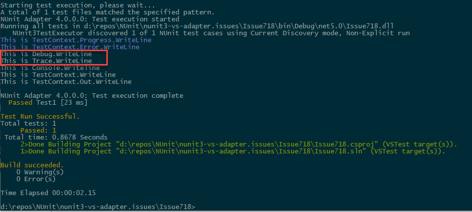

How to enable Trace and Debug output
Trace and Debug output is by default not sent to the console output, or anywhere else. If you want to have this output,
you must add a TraceListener.
Activating the System.Diagnostics.ConsoleTraceListener in your code
This is easy to do, and you can do it per assembly, per namespace or per test. All it takes is to add the necessary
initialization of the ConsoleTraceListener.
To add it to a namespace, place the following class inside that namespace, and it will apply to all tests inside that namespace and below. The code shown adds the output to console output.
[SetUpFixture]
public class SetupTrace
{
[OneTimeSetUp]
public void StartTest()
{
Trace.Listeners.Add(new ConsoleTraceListener());
}
[OneTimeTearDown]
public void EndTest()
{
Trace.Flush();
}
}
If you place the code above outside of any namespace it will apply to the whole assembly.
If you'd like to only apply to a given test fixture/class, you can add the StartTest and EndTest methods to the given
test fixture/class.
If you like you can change that to another kind of listener.
Example outputs
Given the following verbose test:
[Test]
public void Test1()
{
Debug.WriteLine("This is Debug.WriteLine");
Trace.WriteLine("This is Trace.WriteLine");
Console.WriteLine("This is Console.Writeline");
TestContext.WriteLine("This is TestContext.WriteLine");
TestContext.Out.WriteLine("This is TestContext.Out.WriteLine");
TestContext.Progress.WriteLine("This is TestContext.Progress.WriteLine");
TestContext.Error.WriteLine("This is TestContext.Error.WriteLine");
Assert.Pass();
}
With a TraceListener, the output in Visual Studio Test Explorer is:

Without the TraceListener, the blocks in red will not be present.
Running dotnet test -v n, the output will be:

Activating the NUnit.Framework.Diagnostics.ProgressTraceListener in your code
Opposed to the ConsoleTraceListener, the ProgressTraceListener will show Trace and Debug output immediately.
Activating is equally easy to do, and you can also do it per assembly, per namespace or per test. All it takes is to
add the necessary initialization of the ProgressTraceListener and make sure it is only added once. The final
Trace.Flush() is not needed with the ProgressTraceListener.
To add it to a namespace, place the following class inside that namespace, and it will apply to all tests inside that namespace and below. The code shown adds the output to progress output.
[SetUpFixture]
public class SetupTrace
{
[OneTimeSetUp]
public void StartTest()
{
if (!Trace.Listeners.OfType<ProgressTraceListener>().Any())
Trace.Listeners.Add(new ProgressTraceListener());
}
}
If you place the code above outside of any namespace it will apply to the whole assembly.
If you'd like to only apply to a given test fixture/class, you can add the StartTest and EndTest methods to the given
test fixture/class.
If you like you can change that to another kind of listener.
Discussion and source
This issue has been discussed at Issue 718 and
Issue 301. Use of TraceListener suggested by
Frans Bouma. This issue has also been discussed at
NUnit Issue 4686 based on
TestCentric GUI Issue 1043. ProgressTraceListener
suggested by Charlie Poole.